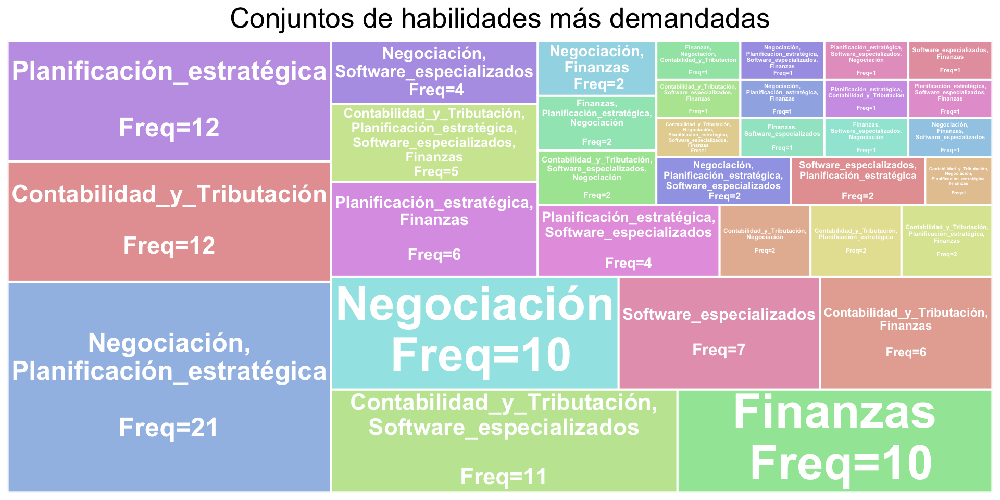

cant_paginas <- 3
listado_de_urls <- character()
for (i in 1:cant_paginas) {#
url_emplea <- paste0('https://www.empleate.com/venezuela/ofertas/empleos_encontrados/', i, '/trabaios-en-venezuela-busqueda-por-economista')
req_emplea <- request(url_emplea)|>
req_method("GET")|>
req_headers( Accept= "*/*",
`Accept-Language`= "es,es-ES;q=0.9,en-US;q=0.8,en;q=0.7,gl;q=0.6",
`User-Agent`= "Mozilla/5.0 (Macintosh; Intel Mac OS X 10_15_7) AppleWebKit/537.36 (KHTML, like Gecko) Chrome/130.0.0.0 Safari/537.36")|>
req_perform()
req_emplea|>
resp_content_type()
datos_html <- req_emplea$body|>
rawToChar()
substr(datos_html,201000,202000)
datos_url <- rvest::read_html(datos_html)
urls_obtenidos <-paste0('https://www.empleate.com',
datos_url%>%
html_nodes('.none-decoration')%>%
html_attr('href')
)
listado_de_urls <- c(listado_de_urls, urls_obtenidos)
print(paste('cantidad elementos descargados:',
length(listado_de_urls)))
#
Sys.sleep(.2)
}
puestos_de_trabajo_obtenidos <- length(listado_de_urls)
###############################################################################
if (file.exists("02_datos_sin_limpiar/df_datos_empleate_2025_01.rds")) {
df_datos_trabajo <- readRDS("02_datos_sin_limpiar/df_datos_empleate_2025_01.rds")
} else {
df_datos_trabajo <- tibble(
puesto_de_trabajo = character(),
empresa = character(),
ubicación = character(),
descripcción = character(),
web = character(),
url_visitado = character(),
fecha = as.Date(character())
)
}
for (i in 1:length(listado_de_urls)) {
# Mostrar progreso
cat("Scraping: puesto", i, "de", length(listado_de_urls), "\n")
# Extraer la URL de la iteración actual
url_emplea_1 <- listado_de_urls[i]
req_emplea <- tryCatch({
request(url_emplea_1) |>
req_method("GET") |>
req_headers(
Accept = "*/*",
`Accept-Language` = "es,es-ES;q=0.9,en-US;q=0.8,en;q=0.7,gl;q=0.6",
`User-Agent` = "Mozilla/5.0 (Macintosh; Intel Mac OS X 10_15_7) AppleWebKit/537.36 (KHTML, like Gecko) Chrome/130.0.0.0 Safari/537.36"
) |>
req_perform()
}, error = function(e) {
cat("Error al acceder a la URL:", url_emplea_1, "\n")
return(NULL)
})
if (is.null(req_emplea)) next
datos_html <- rawToChar(req_emplea$body)
extraccion_de_informacion <- tryCatch({
rvest::read_html(datos_html)
}, error = function(e) {
cat("Error al procesar HTML de:", url_emplea_1, "\n")
return(NULL)
})
if (is.null(extraccion_de_informacion)) next
# Extraer la información
titulo_de_oferta <- extraccion_de_informacion %>%
html_nodes('.fw-600') %>%
html_text() %>%
str_squish()
nombre_de_empresa <- extraccion_de_informacion %>%
html_nodes('.col-lg-9 a') %>%
html_text() %>%
str_squish()
ubicacion_de_trabajo <- extraccion_de_informacion %>%
html_nodes('.yellow') %>%
html_text() %>%
str_squish()
descripccion_de_trabajo <- extraccion_de_informacion %>%
html_nodes('.headline .separator , .text-muted.text-justify') %>%
html_text() %>%
paste(., collapse = './// ') %>%
str_squish()
if (length(titulo_de_oferta) == 0) titulo_de_oferta <- NA
if (length(nombre_de_empresa) == 0) nombre_de_empresa <- NA
if (length(ubicacion_de_trabajo) == 0) ubicacion_de_trabajo <- NA
if (length(descripccion_de_trabajo) == 0) descripccion_de_trabajo <- NA
df_puestos_obtenidos <- tibble(
puesto_de_trabajo = titulo_de_oferta,
empresa = nombre_de_empresa,
ubicación = ubicacion_de_trabajo,
descripcción = descripccion_de_trabajo,
web = "empleate",
url_visitado = url_emplea_1,
fecha = Sys.Date()
)
df_datos_trabajo <- bind_rows(df_datos_trabajo, df_puestos_obtenidos) %>%
distinct(.keep_all = TRUE)
print(paste("Total de filas en df_datos_trabajo:", nrow(df_datos_trabajo)))
saveRDS(df_datos_trabajo, "df_datos_empleate_backup.rds")
Sys.sleep(0.3)
}
# Guardar los datos finales
saveRDS(df_datos_trabajo, "df_datos_empleate_2025_01.rds")Análisis del mercado laboral para economistas en Venezuela
Universidad Central de Venezuela
Anthony Prado, Daniel Conde, Isaias de Ascensao, Cesar Rodríguez
Planteamiento del problema
Motivos de la investigación
- Confusión entre los estudiantes de la Escuela de Economía de la UCV acerca del mercado laboral venezolano.
- Por lo que se realizo una encuesta para contrastar si estas dudas e inquietudes eran generales
- Resultados de la encuesta realizada a estudiantes de semestres intermedios de la carrera, donde se obtuvieron:
- “El 42%” tiene dudas con respecto a los campos laborales en los que se podrán desempeñar como economistas.
- “El 57%” no cree que esté aprendiendo las habilidades necesarias para desempeñarse como economistas en el mercado actual.
Incógnitas a resolver con la investigación
Para llevar a cabo esta investigación se buscó responder las siguientes preguntas:
¿Qué habilidades son más demandadas en el mercado laboral para los economistas en Venezuela?
¿En qué tipos de ofertas laborales se demandan más economistas?
¿Exigen experiencia previa las vacantes actuales?
¿Cuál es el nivel de educación que exigen?
¿Existe la posibilidad de problemas al reclutar economistas?
Desarrollo de la investigación
Recolección de datos
Para recolectar los datos se eligieron 5 páginas web de ofertas laborales en Venezuela.
A través de web scrapping se obtuvieron más de 170 ofertas laborales, descargadas luego de tres semanas continuas de descargas diarias.
Todas estas ofertas laborales fueron organizadas en un único
data.frame.
Recolección de datos

Limpieza de los datos
Primera parte
- Al ser texto la variable descripción de la oferta laboral (la cual se desea limpiar y clasificar), se usó la API de Google Studio IA mediante el siguiente código:
prompt <- "Eres un experto en análisis de ofertas de trabajo. Extrae en formato JSON los requisitos..."
post_texto <- "...(plantilla JSON)..."
for (i in 1:nrow(df_completo)) {
cat("Procesando oferta", i, "de", nrow(df_completo), "\n")
tryCatch({
datos_texto_oferta_de_trabajo <- df_completo$descripción[i]
dato_texto_prompt_gooaistudio <- paste(prompt,
datos_texto_oferta_de_trabajo,
post_texto)
# Configuración de la API
respuesta_api <- POST(
url = gooai_studio_url,
add_headers("Content-Type" = "application/json"),
body = toJSON(list(
contents = list(
list(parts = list(list(text = dato_texto_prompt_gooaistudio)))
)
), auto_unbox = TRUE),
query = list(key = api_key),
encode = "json"
)
# Procesamiento de la respuesta
datos_goo_respuesta <- content(respuesta_api, as = "text", encoding = "UTF-8") %>%
fromJSON() %>%
.$candidates %>%
.$content %>%
.$parts %>%
.[[1]] %>%
str_squish() %>%
str_remove_all('json|') %>%
fromJSON()
requisitos <- datos_goo_respuesta$requisitos_del_puesto_de_trabajo
# Guardar datos en df_completo
df_completo$nivel_educativo[i] <- requisitos$nivel_educativo
df_completo$edad[i] <- requisitos$edad
df_completo$experiencia[i] <- requisitos$experiencia
df_completo$habilidades[i] <- list(requisitos$habilidades)
df_completo$conocimientos_tecnicos[i] <- list(requisitos$conocimientos_tecnicos)
Sys.sleep(3)
}, error = function(e) {
cat("Error en la oferta", i, ": ", conditionMessage(e), "\n")
})
}Con estos datos se obtuvo: De las habilidades y conocimientos técnicos solicitados, más de 2000 entradas distintas las cuales se almacenaron en un dataframe aparte.
Estas fueron procesadas en https://atlas.nomic.ai para obtener un mapa de embeddings (Mapa de la investigación).

- Con las categorías procesadas en este mapa, se inició la segunda parte de la limpieza.
Segunda Parte
Luego de analizar profundamente las categorías obtenidas del mapa anterior se eligieron las siguientes para las habilidades:
Finanzas
Planificación estratégica
Softwares especializados
Negociación
Contabilidad y tributación
Con estas categorias se hace un segundo llamado a la API Google Studio IA para obtener las categorías según la taxonomía definida.
De esta respuesta se filtran las categorías y se convierten variables character a booleanas (TRUE/FALSE) donde aplique.
Por último, se reordenan los datos finales para el análisis.
Este mismo proceso se aplicó para niveles de educación mínimos, experiencia mínima y tipos de ofertas laborales
Resultados de la investigación
Habilidades demandadas
Conjuntos de habilidades más demandadas
Tipo de ofertas laborales más demandados
Niveles de experiencia más demandados
Nivel de educación más demandado
Conclusiones
Conclusiones
Las habilidades mas demandadas son: Planificación estratégica y Habilidadesde negociación
Los puestos de trabajo en donde más economistas se solicitan son: Administrador y Gerencia
El mínimo solicitado de experiencia es: 1 año
Incognitas nuevas
¿Por qué hay tantas ofertas laborales para economistas similares a ofertas laborales para Administradores y/o Contadores?
¿Cuál intervalo de edad es el más demandado por los oferentes de empleo de economistas?
Ventajas de la metodología utilizada
Tomando como referencia el artículo científico de Migueláñez, S. O., Puyal, M. B., Riaza, B. G., Conde, M. J. R., & Elorza, I. (2011). “Velocidad y comprensión lectora: Planificación de la carga académica en la Universidad” donde se llega a la conclusión de que los estudiantes universitarios tienen una velocidad de lectura de 200 palabras por minuto aproximadamente
Bajo este supuesto y sabiendo que solamente las descripciones de todos los puestos de trabajo tienen en total 150.190 palabras el tiempo promedio de solo la lectura de estos sería de 12 horas.
En contraste del tiempo completo que llevo la creación del codigo de la recolección y limpieza de los datos fue de 15 horas en total dejando el proceso automatizado.
Referencias Bibliográficas
Migueláñez, S. O., Puyal, M. B., Riaza, B. G., Conde, M. J. R., & Elorza, I. (2011). Velocidad y comprensión lectora: Planificación de la carga académica en la Universidad. Bordón: Revista de pedagogía, 63(3), 107-119.